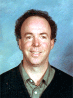
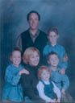

|
 |
Greg Henderson was born on July 29, 1953 in Carmel, California. He is married and has four children, Ryan, Christopher, Sean, and Leah. |
|
| Important Facts | ||
| July 29, 1953 | Born in Carmel, California on July 29, 1953, Gregory Ford Henderson is the second of five children of Alexander D. Henderson III and Patricia Ford. His birth was announced in the Monterey Peninsula Herald. Source: Peninsula Community Hospital records. |

|
| Born premature at Peninsula Community Hospital in Carmel, California at 8:22 P.M. | ||
| July 5, 1957 | Greg's parents moved the family from California to Florida. At first, they lived at Greg's grandfather's Avon by the Sea apartments in Pompano Beach, Florida. The apartments were across the street from the Hillsboro Country Day School, which the children attended. | |
| 1958 | The family moved into a new house at 3532 N.E. 31st Avenue, Pompano Beach, Florida. The house was a single-story concrete block house on the intracoastal and had a boat dock. |

|
| 1958 | Went to my grandfather's school called the Hillsboro Country Day School in Hillsboro, Florida, from kindergarten through 6th grade. I went to Pine Crest School for one year. | |
| 1963 | The family moved to a home located in a gated community called Sea Ranch Lakes, in Ft. Lauderdale, Florida, with a private police force and a private beach club. It had a large lake in the middle separated by a large lake. The family took summer vacations at Pine Orchard, Connecticut and Jamaica. |

|
| 1964–1966 | Greg went to Camp Arrowhead in Tuxedo, North Carolina. He attended Pine Crest School in Fort Lauderdale, Florida (7th grade). Greg went to Camp Highlander in Highlands, North Carolina. | |
| 1967–1968 | Attended the Meadowbrook Manor Riding Farm in East Stroudsburg, Pennsylvania and JO-AN Farms in Milan, Missouri. Rode horses every day and attended some horse shows. | |
| 1969–1972 | Moved back to California after my parents divorced and started high school at Robert Louis Stevenson School in Pebble Beach. |

|
| 1972–1974 | Graduated from RLS and started college at Menlo College in Menlo Park, California. Graduated from Menlo College with an AA degree. | |
| 1974–1975 | Attended the University of Pacific (UOP) in Stockton, California. Greg went on a school trip to Taipei, Taiwan on a UOP month-long sponsored trip to study the culture of Taiwan. | |
| 1975–1980 | Was a member of the Church of Scientology. Bought the New York West Deli restaurant in Stockton, California. Became part-owner in a bakery, health food store, and cafe. | |
| February 3, 1976 | Visited South America — Ecuador, Peru, and Bolivia. For about a week we sailed in a small boat around the Galapagos Islands with a tour guide. |

Galapagos Islands |
| The family took summer trips to Aspen to see our father and Donna. The family camped at Maroon Bells and Flying Pan Lake. One summer they took llamas over the Continental Divide but turned back due to rain. | ||
| December 30, 1978 | Flew to Heathrow on Dec. 27, 1978 and married Susan Patricia Grant in Bromley, England on December 30th. The wedding was a civil wedding with a reception at John Grant's home in Bromley. John Grant was a Member of Parliament. | |
| December 21, 1979 | Visited Sue's family in 1979. On October 16, 1981, traveled to Dover, England and took a ferry to Paris, France. | |
| 1980–1984 | Sold the New York West restaurant in Stockton and moved to Sausalito, California. I went back to school at San Francisco State University. Majored in Business Information Systems. Graduated with a BS degree in Business and Information Systems. Divorced Sue Grant in Sausalito, California. | |
| 1984–1986 | Greg's first job out of college was as a COBOL programmer for Lockheed Missiles & Space (now called Lockheed Martin Corporation) in Sunnyvale, California. | |
| 1987–1993 | Greg worked as a Quality Assurance (QA) Engineer for Apple Computer, Cupertino. |
|
| December 30, 1989 | Married Louise Zellie Gloor at her parents' home in Mariposa, California. | |
| May 27, 1990 | Ryan Alexander Henderson was born at Kaiser Permanente in Santa Clara, California. |
 |
| 1991 | Greg and Louise bought a 3-bedroom, 2-bath home in Campbell, California. We later remodeled it to contain 4 bedrooms and 3 bathrooms. | |
| February 18, 1992 | Christopher Ford Henderson was born at Kaiser Permanente in Santa Clara, California. | |
| 1993–2003 | Greg left Apple to become a QA Manager for Computer Curriculum Corporation. CCC was a leader in educational software and is now part of Pearson Education. |

|
| March 12, 1994 | Sean Murray Henderson was born at Kaiser Permanente in Santa Clara, California. | |
| Sept. 19, 1996 | Leah Louise Henderson was born at Kaiser Permanente in Santa Clara, California. | |
| 2003–2006 | Greg left CCC and worked as a Test Lead Engineer at Kaplan Inc. in Oakland, California. Kaplan is a leader in K12 educational software. |

|
| 2006–2007 | Greg worked as a Senior Test Engineer at AlphaSmart in Los Gatos, California. AlphaSmart changed their name to Renaissance Learning, which is a leading provider of computerized assessment and progress-monitoring tools for pre-K-12 schools and districts. |

|
| 2007–2011 | Greg became a QA Manager at YouSendIt, Inc., later called Hightail, which was a global leader in digital content delivery. Hightail's mission was to empower people to send, receive, and track digital files on demand. |

|
| 2012–2019 | Greg worked at Quisk, Inc. as a Senior QA Manager in Sunnyvale, California. Quisk was a global mobile payments technology company and a leading provider of mobile marketing and payments solutions for banks, financial institutions, and merchants. | |
| 2019–Present | Since 2019, Greg Henderson has focused on preserving and interpreting the early history of Carmel-by-the-Sea and Monterey County. He has published multiple books and scholarly works documenting the region’s founding families, artists, and photographers, including a comprehensive study of Lewis Josselyn and Carmel-by-the-Sea. |

Last update: Friday, March 27, 2026